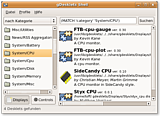
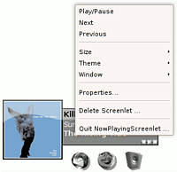

Desklets
Archivierte Anleitung
Dieser Artikel wurde archiviert, da er - oder Teile daraus - nur noch unter einer älteren Ubuntu-Version nutzbar ist. Diese Anleitung wird vom Wiki-Team weder auf Richtigkeit überprüft noch anderweitig gepflegt. Zusätzlich wurde der Artikel für weitere Änderungen gesperrt.
Anmerkung: Der Artikel ist komplett neu geschrieben worden, die aktuelle Version ist Desklets
Zum Verständnis dieses Artikels sind folgende Seiten hilfreich:
Desklets, auch Widgets oder Gadgets genannt, sind kleine Erweiterungen für den Desktop. Neben einfachen Eye Candy gibt es auch eine Reihe nützlicher Desklets: Wetteranzeigen, Uhren, Kalender, Systemmonitore, Webcambilder, etc. Dabei werden die Ausgaben der Desklets meist direkt in den Hintergrund eingebettet und stören so nicht die Übersicht über die "normalen" Programme. Man kann eigene Themes und Skripte erstellen, die das sogenannte Widget definieren. Den Möglichkeiten sind dabei keinerlei Grenzen gesetzt:
Interaktive Wettervorhersagen
Steuerung und Anzeige von Amarok
Kalender und Notizen
Originelle Uhren
Systemmonitor für CPU, Netzwerk, Festplatten, ...
Mailbox-Abfragen auf neue Nachrichten
Newsticker und RSS-Nachrichten
Animierte Menübalken
Komplexe Programme wie z.B. SETI@home
Damit diese Programme automatisch starten, sind diese dem Autostart [4] hinzuzufügen.
GDesklets¶
gDesklets  sind kleine Erweiterungen für den Desktop. Neben einfachen Eye Candy gibt es auch eine Reihe nützlicher Desklets: Wetteranzeigen, Uhren, Kalender, Systemmonitore...
sind kleine Erweiterungen für den Desktop. Neben einfachen Eye Candy gibt es auch eine Reihe nützlicher Desklets: Wetteranzeigen, Uhren, Kalender, Systemmonitore...
Benutzung¶
Nach der Installation ist das Programm im GNOME-Menü unter
"Anwendungen -> Zubehör -> gDesklets"
zu finden. Nach dem Aufruf öffnet sich die gDesklets Shell. In dieser Shell können Desklets ausgewählt und auch installiert werden, wobei die Desklets nach Kategorien sortiert sind.
Autostart¶
Bei der Installation von gDesklets wird das Programm nicht automatisch bei einem Neustart des Computers gestartet. Wenn gewünscht, dann muss gDesklets in Startprogramme ( Autostart )
"System -> Einstellungen -> Startprogramme"
aufgenommen werden.
Einstellungen¶
gdesklets bietet ein paar globale Einstellungen. Diese erreicht man entweder per Rechtsklick auf das Tray-icon oder durch den Befehl:
gdesklets configure
Bevorzugter Texteditor¶
Man kann einen bevorzugten Texteditor auswählen, mit welchem man zum Beispiel den Quellcode der Desklets betrachten kann.
XComposite Support¶
Mit dieser Option kann man Transparenz für die Desklets einschalten. Dazu muss man allerdings einen Grafiktreiber mit Compisitemanager installiert haben. Alternativ kann man allerdings bei vielen Desklets auch für den Hintergrund ein Bild auswählen. Wählt man hier zum Beispiel ein 1*1 Pixel großes transparentes *.png Bild erreicht man auch ohne Composite Transparenz.
Bildschirmauflösung¶
Um die Desklets richtig darzustellen, kann man hier die Auflösung angeben.
Benachrichtigungssysmbol anzeigen¶
Schaltet das Tray-icon an/aus.
Mitteilungen beim Laden eines Desklets¶
Gibt eine kleine debug-Meldung aus wenn die Desklets initialisiert werden.
Tastenkombination zum Schwebemodus umschalten¶
Ein sehr nützliches Feature. Schwebemodus bedeutet, dass die Desklets in den Vordergrund kommen, also über allen Fenstern dargestellt werden. Per default ist der Hotkey Strg + S , was man vielleicht ändern möchte da Strg + S in vielen Editoren und Textverarbeitungen der Hotkey zum Speichern ist.
Desklets installieren¶
 Eigene Desklets, die man sich von der Homepage als Archiv heruntergeladen hat, kann man einfach auf die Shell ziehen, um sie zu installieren. Die eigenen Desklets sind dann im Verzeichnis $HOME/.gdesklets zu finden. Ist das Paket gdesklets-data installiert, so steht sofort eine große Anzahl an Desklets zur Verfügung.
Hinweis:
Die Wetterdesklets sind seit 2006 nicht mehr aktualisiert worden und nicht funktionsfähig. Die aktuellen Wetterdaten können von verschiedenen Websites, wie http://local.yahoo.com/ oder http://de.weather.com/  nicht mehr abgerufen und daher von den GDesklets nicht mehr angezeigt werden.
nicht mehr abgerufen und daher von den GDesklets nicht mehr angezeigt werden.
Desklets benutzen¶
Die installierten Desklets werden durch einen Doppelklick auf die gewünschte Erweiterung aktiviert. Wird ein Rechtsklick auf das jeweilige Desklet ausgeführt, öffnet sich ein Dialogfenster zur weiteren Einstellung.
Screenlets¶
Screenlets (Kurzform für "Screen-Applets") sind nützliche Miniprogramme wie Notizzettel, Wetteranzeige, Email-Checker und andere mehr.
Seit der Version 0.0.8 können die einzelnen Screenlets völlig unabhängig voneinander eingesetzt werden. Nach der Installation des Grundprogramms und den "Standard-Screenlets" können viele weitere hinzuinstalliert werden, deren Zahl beinahe täglich steigt.
Vorbereitung¶
Vor der Installation sollte man beachten, dass Screenlets einen Composite-Manager (siehe 3D-Desktop) benötigen. Möglichkeiten sind:
Installation¶
Paketverwaltung¶
Das Paket screenlets ist ab Gutsy Gibbon in den Backports sowie ab Hardy Heron in den normalen Paketquellen enthalten. Folgendes Paket ist zu installieren [1]:
screenlets (universe, [2])
Manuell¶
Zuerst lädt man die neueste Screenlets Version hier  herunter und entpackt das Paket. Anschließend wechselt man im Terminal in das entpackte Verzeichnis und installiert das Programm mittels
herunter und entpackt das Paket. Anschließend wechselt man im Terminal in das entpackte Verzeichnis und installiert das Programm mittels
sudo python setup.py install
Manuelle Deinstallation¶
Falls man das entpackte Paket des Screenlets Quellcodes gelöscht hat, muss man das Paket noch einmal hier herunterladen und entpacken. Nun führt man folgendes Befehle im Terminal aus:
cd screenlets sudo make uninstall sudo rm -rf /usr/lib/python2.5/site-packages/screenlets*
Start¶
Nach der Installation ist das Programm im GNOME-Menü unter
"Anwendungen -> Zubehör -> Screenlets"
zu finden. Nach dem Aufruf öffnet sich der Screenlets Manager. In diesem können Desklets ausgewählt und auch installiert werden.
Menü installieren¶
Optional kann man im Anschluss noch ein eigenes Menü unter "Anwendungen" anlegen lassen, das Anwendungsstarter zu den grundlegendsten Screenlets bereitstellt. Dieses Menü lässt sich später über den Menüeditor beliebig erweitern oder löschen.
sudo make menu
Nun kann das entpackte Archiv wieder entfernen werden.
Weitere Screenlets installieren¶
Wichtigste Anlaufstelle für weitere Screenlets ist die UserScreenlets Sparte der offiziellen Webseite. Außerdem findet man viele Screenlets auf gnome-look.org und auch im Screenlets-Subforum des Compiz-Fusion-Forums. Hierbei sollte man darauf achten, für welche Programmversion die Screenlets geschrieben wurden.
Zusatz-Screenlets werden gepackt zum Download angeboten. Den Inhalt des jeweiligen Archivs bzw. den darin befindlichen Ordner mit Namen des Screenlets entpackt [5] man entweder in /usr/local/share/screenlets (damit alle Benutzer dieses Screenlet verwenden können - dies erfordert allerdings root-Rechte) oder in den versteckten Ordner ~/.screenlets des eigenen Home-Ordners.
Alternativ dazu kann auch der Screenlets-Manager zum Installieren weiterer Screenlets benutzt werden. Dieser lässt sich über "System -> Einstellungen -> Screenlets" starten. Falls dieser Eintrag nicht existiert, kann er auch manuell über den Befehl
screenlets-manager
gestartet [6] werden.
Über den Button "Install Screenlet" kann das heruntergeladene Archiv ausgewählt werden - dieses wird dann automatisch in ~/.screenlets entpackt (diese Screenlets sind folglich nur für den aktuellen Benutzer verfügbar).
Screenlets starten¶
Über den Screenlets-Manager¶
Zusätzlich zur Installation weiterer Screenlets kann der Screenlets-Manager auch zum Starten aller installierten Screenlets genutzt werden. Unabhängig davon, wie die einzelnen Screenlets installiert wurden, überprüft der Manager beim Start die jeweiligen Ordner und ist damit immer auf dem aktuellen Stand. Über "Enable/Disable" kann das Programm auch anzeigen, welche Screenlets im Einsatz sind (auch wenn diese anderweitig gestartet wurden). Darüber hinaus kann über die Option "Automatically start on login", nach Selektion des gewünschten Screenlets, dieses dem Autostart hinzugefügt werden.
Über das Control-Screenlet¶
Um die einzelnen Screenlets starten zu können, bringt das Programm auch ein eigenes Control-Screenlet mit, das - neben ein paar praktischen Anwendungsstartern - alle Screenlets dem Desktop hinzufügen kann. Über das Kontextmenü und dann "Screenlet -> Add" erreicht man alle installierten Screenlets (solche, die nicht systemweit verfügbar sind, werden unterhalb des Trennstrichs aufgelistet).
Über das Startmenü¶
Dieses steht eigentlich nur Benutzern der manuellen Installation zur Verfügung (s.o.), aber über einen Menüeditor kann sich natürlich jeder ein solches Menü anlegen. Die nötigen Startbefehle sind im folgenden Abschnitt beschrieben. Ein entsprechendes Symbol lässt sich meistens im Ordner des installierten Screenlets finden.
Screenlets direkt starten¶
Im Gegensatz zu sehr frühen Versionen benötigen Screenlets mittlerweile keinen Daemon für das gesamte Programm mehr. Dadurch können sie wie jede andere Anwendung direkt und unabhängig voneinander gestartet werden - dies hat u.a den fundamentalen Vorteil, dass man für einzelne Screenlets Anwendungsstarter auf dem Desktop oder dem Panel anlegen kann.
Um ein Screenlet direkt zu starten [6] bzw. in einen Anwendungsstarter einzutragen, benötigt man den kompletten Pfad zum Screenlet, der ganz davon abhängt, wie es installiert wurde:
/usr/local/share/screenlets/<Screenlet-Name>/<Screenlet-Name>Screenlet.py ## Bzw. falls man es im Home-Ordner gespeichert hat über: /home/<Benutzer>/.screenlets/<Screenlet-Name>/<Screenlet-Name>Screenlet.py ## Für das Notizzettel-Screenlet dann also zum Beispiel: /usr/local/share/screenlets/Notes/NotesScreenlet.py
Diesen Befehl kann man dann auch in den Autostart eintragen, um das gewünschte Screenlet beim Systemstart mitzuladen [4].

Benutzung¶
Nachdem man ein Screenlet gestartet hat, kann man dieses über das Kontextmenü (Rechtsklick auf das jeweilige Screenlet) konfigurieren. Es können beliebig viele Screenlets eines Typs gestartet werden, dies geschieht jedoch innerhalb einer Instanz - sie lassen sich damit gemeinsam über das Kontextmenü beenden ("Quit <Screenlet-Name>Screenlet") aber auch einzeln löschen ("Delete Screenlet").
Tipp: Damit sich Screenlets bei einem Klick auf "Desktop anzeigen" nicht wie normale Fenster verhalten und verschwinden bzw. minimiert werden, muss folgendes getan werden: Zunächst öffnet man die zu ändernde Datei /usr/lib/python2.5/site-packages/screenlets/init.py in einem Editor[8] mit Root-Rechten[9]. (Dieser Pfad gilt nur bis einschließlich Ubuntu 8.10. Bei Ubuntu 9.04 liegt die Datei nicht mehr in /usr/lib/python2.5/site-packages/screenlets/ sondern in /usr/lib/python2.6/dist-packages/screenlets/, bei Ubuntu 9.10 liegt sie dann in /usr/share/pyshared/screenlets/ .)
Nun einfach folgende Zeile
self.window.set_type_hint(gtk.gdk.WINDOW_TYPE_HINT_TOOLBAR)
in diese
self.window.set_type_hint(gtk.gdk.WINDOW_TYPE_HINT_DOCK)
umwandeln.
Bei Ubuntu 8.04 fehlt der obere Eintrag und man muss stattdessen das #-Zeichen vor dieser Zeile entfernen: "#self.window.set_type_hint(gtk.gdk.WINDOW_TYPE_HINT_DOCK)"
SuperKaramba¶
SuperKaramba war ein Programm für KDE 3, welches die Darstellung von Widgets auf dem KDE-Desktop ermöglichte. Seit Ubuntu 8.10 Intrepid Ibex setzt Kubuntu allerdings auf KDE 4 bzw. Plasma Miniprogramme, welches auch SuperKaramba Widgets sein können. Weitere Informationen unter SuperKaramba.
adesklets¶
adesklets steht für a(nother)desklets. Es sind kleine Erweiterungen für den Desktop, ähnlich wie GDesklets.
Hinweis:
Die Transparenz von adesklets funktioniert unter Gnome nicht.
Installation¶
Zur Installation einfach folgende Pakete installieren [1]:
adesklets(universe, [2])
python-tk
Weitere Desklets¶
Die Desklets kann man durch eine grafische Oberfläche installieren (siehe Bild), die man durch folgenden Befehl im Terminal [3] startet:
adesklets -i
Manchmal dauert das Herunterladen sehr lange. Wen das stört, kann die Desklets manuell von der Homepage herunterladen und in den versteckten Ordner /home/BENUTZERNAME/.desklets entpacken [5].
Desklets benutzen¶
Bevor ein Desklet gestartet werden kann, sollten die README-Datei im Ordner gelesen und eventuelle Abhängigkeiten beseitigt werden. Um das Desklet dann zu starten, öffnet man ein Terminal [3] und führt in dem Ordner, in dem sich das Desklets befindet, folgenden Befehl aus (Bisher gibt es nur Python-Desklets!):
./[pluginname].py
Jetzt erscheint eine Meldung, ob das Desklet registriert oder getestet werden soll. Registriert heißt, dass das Desklet beim Start des adesklets-Daemon mit gestartet wird.
Um den adesklets-Daemon zu starten, einfach adesklets ausführen und ggf. in den Autostart schreiben [4], um adesklets beim Systemstart mit zu starten.
Hinweis:
Um die aDesklets korrekt zu registrieren, darf man sie nicht mit python [desklet_name].py starten. (Sie starten dann im Test Modus, egal ob man nun r oder t eingegeben hat)
Google Gadgets¶
Auch die Firma Google hat für ihre Gadgets eine Linuxversion entwickelt. Weitere Informationen unter Google Gadgets.
Links¶
gDesklets installieren und nutzen
- Artikel aus LinuxUser 05/2005Screenlets
auf LaunchpadEigenes Unterforum für Screenlets
- für Fragen und SupportSuperKaramba Themes
auf KDE-Look
- Erstellt mit Inyoka
-
 2004 – 2017 ubuntuusers.de • Einige Rechte vorbehalten
2004 – 2017 ubuntuusers.de • Einige Rechte vorbehalten
Lizenz • Kontakt • Datenschutz • Impressum • Serverstatus -
Serverhousing gespendet von